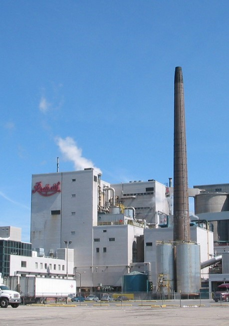

Work Experience
Queen's Teaching Assistant
- Technical position to teach MATLAB to second year engineering students to reach the
goal of creating either Lloyd’s, Opinion’s, Flocking or Formation Algorithm.
Wamri.ai Software Intern
- Remote mentorship using python and applying it to AI. Studied AI (from Jeremy Howard’s
fast.ai course) with Paperspace (online GPU).
- Converted collected lidar data of individuals entering a room (points created using
lidar detection technology) from a 3D plane to a 2D plane while taking into consideration
time complexity.
American Sugar Refineries IT Intern
- Process Improvement – assisted with reengineering processes to streamline work which led to
an increase in output and reduced manual labor.
- Software imaging and testing for new employee laptops, whilst providing feedback to desktop
engineers on the loading of images and using DOS to troubleshoot as needed.
Kumon Assistant Instructor
- Taught and marked work for Math and English and, provided training to new employees.
- Utilized strong communication skills to build clientele at Kumon and ensured current
customers were provided excellent service to maintain customer retention.